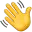

سلام، من محدثهام؛
طراحمحصول.
با بیش از ۳ سال تجربه در طراحی نرمافزارهای سازمانی، محصولات مبتنی بر AI و الگوهای مقیاسپذیر UX. نیازهای کاربر، اهداف کسبوکار و محدودیتهای فنی را به هم وصل میکنم تا تجربههای محصول بهتری شکل بگیرند.
 کارها
کارهانگاهی نزدیکتر به اینکه چطور فکر میکنم، طراحی میکنم
و مسائل محصول را حل میکنم.
Enterprise UXتحقیق کاربربازطراحی فرایند
بازطراحی فرایند دستور تهیه نقشه
چیزی که در نگاه اول یک رابط کاربری پیچیده به نظر میرسید، در واقع یک فرایند تکهتکه بود. با مصاحبه با ذینفعان، مشاهده میدانی و تحلیل فرایند، فاصله بین ساختار سیستم و عملیات واقعی را پیدا کردم و تجربه را حول جریان کار واقعی کاربران بازطراحی کردم.
Enterprise UXSaaS
سامانه مدیریت املاک و مستغلات
جریانهای بههمپیوسته یک سامانه مدیریت املاک را طراحی کردم؛ از ثبت و ارزیابی ملک تا سوابق مالکیت و اسناد. در این مسیر، با تحلیل نیازمندیها و طراحی تعامل، تلاش کردم عملیات پیچیده املاک ساختارمندتر و قابلمدیریتتر شود.
AI Experience Designتعامل انسان و AI
دستیار هوشمند پشتیبانی و آموزش
تمرکز این پروژه روی طراحی تجربه هوش مصنوعی (AX) برای راوین بود؛ دستیار پشتیبانی و آموزش نرمافزارهای پیچیده سازمانی. کار من شامل شکلدادن به تعامل انسان و AI، تعریف رفتار دستیار و طراحی جریانهای گفتوگو بود، با تأکید بر شفافیت، اعتماد، مدیریت خطا و کنترل کاربر.
Design SystemsUX Patterns
کتابخانه الگوهای UX مبتنی بر وظیفه
از اجزای قابلاستفاده مجدد UI فراتر رفتم تا چالشهای تکرارشونده تعامل در محصولات سازمانی را حل کنم. یک کتابخانه الگوی UX مبتنی بر وظیفه ساختم، با دستهبندیهای روشن، قواعد استفاده و راهنمای تصمیمگیری برای طراحی منسجمتر و تصمیمگیری سریعتر.
B2Cتحقیق کاربراپلیکیشن موبایل
اپلیکیشن مدیریت و پیگیری مطالعه
رهرو را بهعنوان یک همراه مطالعه طراحی کردم که ساماندهی کتابها، پیگیری پیشرفت و عادتهای مطالعه را کنار هم میآورد. هدف این بود که ارتباط خوانندگان با کتابهایشان حفظ شود و مدیریت مسیر مطالعه سادهتر باشد.
مسیر حرفهای و تجربهها
در سه سال گذشته، روی محصولات مصرفی، نرمافزارهای سازمانی، EdTech و تجربههای مبتنی بر AI کار کردهام. در این مسیر، تمرکزم از طراحی رابط به سمت کشف مسئله، تفکر سیستمی و تصمیمگیری محصول حرکت کرده است.
پایههای طراحیام را با کار مستقل در صنایع مختلف شکل دادم و مهارتهایم در طراحی کاربرمحور، طراحی تعامل و ارتباط بصری را توسعه دادم.
بهعنوان اولین طراح به یک استارتاپ حوزه املاک و خدمات ساختمان پیوستم. با تحقیق کاربر، همکاری با ذینفعان، طراحی تجربههای مبتنی بر نقش و اجزای قابلاستفاده مجدد UI، به شکلگیری پایههای طراحی آن کمک کردم.
با تجربه عملی و وصلکردن روشهای طراحی به چالشهای واقعی محصول، رویکرد ساختارمندتری به طراحی محصول پیدا کردم.
تجربههای چندنقشی EdTech را برای دانشآموزان، مدرسان و متخصصان طراحی کردم؛ با تمرکز بر ساخت دوره، انتشار محتوا، ثبتنام و تعاملات آموزشی.
تجربه دیجیتال مرکز خرید را با بهبود معماری اطلاعات، کشف خدمات و سفر کاربر بازطراحی کردم. در کنار آن، یک UI Library قابلاستفاده مجدد ساختم و تا زمان عرضه همراه محصول بودم.
روی طراحی نرمافزارهای پیچیده سازمانی و شهرداری کار میکنم؛ با تمرکز بر کشف مسئله، تحلیل فرایند، الگوهای مقیاسپذیر UX و تجربه AI. با تیمهای مختلف همکاری میکنم تا چالشهای عملیاتی و فنی به تجربههای کاربردی تبدیل شوند.
چیزهایی که به آنها
علاقهمندم
چالشهای پیچیده و فرصت بهترکردن کارها برایم جذاباند. علاقهام از طراحی رابط فراتر میرود؛ به درک سیستمها، بازنگری فرایندها، شناخت نیازهای کسبوکار و ایجاد اثر معنادار در محصول فکر میکنم.
محصولات پیچیده و سادهسازی
تبدیل پیچیدگی به تجربههای روشن، کاربردی و کارآمد.
طراحی فرایند و جریان کار
تحلیل، طراحی و بهبود فرایندهای سرتاسری میان افراد، سیستمها و فناوری.
تحلیل کسبوکار و اثرگذاری محصول
درک نیازهای کسبوکار، شناسایی فرصتها و مشارکت در تصمیمهای محصول.
طراحی تجربه هوش مصنوعی (AX)
طراحی تجربههای انسان و AI که کاربردی، قابلاعتماد و واقعاً کمککننده باشند.
اثر انسانی و رشد
ساخت محصولات معنادار برای یادگیری، رشد و بهبود کیفیت زندگی، بهویژه در EdTech و HealthTech.